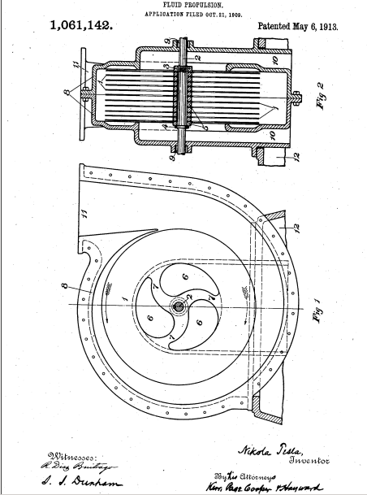

Descarga la patente original en esté enlace


Que se sepa que yo, NIKOLA TESLA , ciudadano de los Estados Unidos, que reside en Nueva York, en el condado y en el estado de Nueva York, he inventado ciertas mejoras nuevas y útiles en la propulsión de fluidos, de las cuales la siguiente es una completa , descripción clara y exacta.
En la aplicación práctica de la potencia mecánica basada en el uso de un fluido como vehículo de energía, se ha demostrado que, para lograr la mayor economía, los cambios en la velocidad y dirección del movimiento del fluido deben ser tan graduales. como sea posible. En las formas actuales de tales aparatos, los cambios más o menos repentinos, los golpes y vibraciones son inevitables. Además, el empleo de los dispositivos habituales para impartir energía a un fluido, como pistones, paletas, álabes y palas, introduce necesariamente numerosos defectos y limitaciones y aumenta la complicación, el coste de producción y el mantenimiento de la máquina.
El objeto de mi presente invención es superar estas deficiencias en los aparatos diseñados para la propulsión de fluidos y efectuar así la transmisión y transformación de energía mecánica a través de la agencia de fluidos de una manera más perfecta, y por medios más simples y económicos que los empleado hasta ahora. Logro esto haciendo que el fluido propulsado se mueva en trayectos naturales o líneas de corriente de menor resistencia, libre de restricciones y perturbaciones como las ocasionadas por paletas o dispositivos afines, y que cambie su velocidad y dirección de movimiento en grados imperceptibles, evitando así la pérdidas debidas a variaciones repentinas mientras el fluido recibe energía.
Es bien sabido que un fluido posee, entre otras, dos propiedades destacadas: adherencia y viscosidad. Debido a esto, un cuerpo impulsado a través de dicho medio encuentra un impedimento peculiar conocido como "lateral" o "resistencia de la piel", que es doble; uno que surge del choque del fluido contra las asperezas de la sustancia sólida, el otro de fuerzas internas opuestas a la separación molecular. Como consecuencia inevitable, el cuerpo en movimiento arrastra una cierta cantidad de líquido. Por el contrario, si el cuerpo se coloca en un fluido en movimiento, por las mismas razones, es impulsado en la dirección del movimiento. Estos efectos, en sí mismos, son de observación diaria, pero creo que soy el primero en aplicarlos de manera práctica y económica para impartir energía o derivarla de un fluido.
El tema de esta solicitud es una invención perteneciente al arte de impartir energía a fluidos, y ahora procederé a describir su naturaleza y principios de construcción del aparato que he ideado para llevarlo a cabo haciendo referencia a los dibujos adjuntos que ilustran una realización operativa y eficaz del mismo.
La figura 1 es una vista de extremo parcial y la figura 2 es una sección transversal vertical de una bomba o compresor construido y adaptado para funcionar de acuerdo con mi invención.
En estos dibujos, el dispositivo ilustrado contiene una corredera compuesta por una pluralidad de discos rígidos planos 1 de un diámetro adecuado, enchavetados a un eje 2, y mantenidos en posición mediante una tuerca roscada 3, un resalte 4 y arandelas 5, del espesor requerido. Cada disco tiene una serie de aberturas centrales 6, cuyas porciones macizas entre las cuales forman radios 7, preferiblemente curvados, como se muestra, con el fin de reducir la pérdida de energía debido al impacto del fluido. El corredor está montado en una carcasa de voluta de dos partes 8, que tiene cajas de empaquetadura 9 y entradas 10 que conducen a su parte central. Además, se proporciona una salida 11 que se ensancha y redondea gradualmente, formada con una brida para la conexión a una tubería como es habitual. La carcasa 8 descansa sobre una base 12, mostrada solo en parte, y que soporta los cojinetes del eje 2, que, siendo de construcción ordinaria.
La comprensión del principio incorporado en este dispositivo se obtendrá a partir de la siguiente descripción de su modo de funcionamiento. Aplicando fuerza al eje y el rodete puesto en rotación en la dirección de la flecha sólida el fluido por sus propiedades de adherencia y viscosidad, al entrar por las entradas 10 y entrar en contacto con los discos 1 es retenido por el mismo y sometido a dos fuerzas, una que actúa tangencialmente en el sentido de giro y la otra radialmente hacia fuera. El efecto combinado de estas fuerzas tangenciales y centrífugas es impulsar el fluido con una velocidad en continuo aumento en una trayectoria en espiral hasta que alcanza la salida 11 de la que es expulsado. Este movimiento en espiral, libre y sin perturbaciones y esencialmente dependiente de las propiedades del fluido, permitirle ajustarse a los caminos naturales o líneas de corriente y cambiar su velocidad y dirección en grados insensibles, es característico de este método de propulsión y ventajoso en su aplicación. Mientras atraviesa la cámara que encierra el corredor, las partículas del fluido pueden completar una o más vueltas, o sólo una parte de una vuelta. En cualquier caso dado, su trayectoria puede calcularse de cerca y representarse gráficamente, pero se puede obtener una estimación bastante precisa de las vueltas simplemente determinando el número de revoluciones necesarias para renovar el fluido que pasa a través de la cámara y multiplicándolo por la relación entre la velocidad media de el fluido y el de los discos. He descubierto que la cantidad de fluido propulsado de esta manera es, en igualdad de condiciones, aproximadamente proporcional a la superficie activa del corredor y a su velocidad efectiva. Por esta razón, el rendimiento de dicha máquina aumenta a un ritmo excesivamente alto con el aumento de su tamaño y velocidad de revolución.
Las dimensiones del dispositivo en su conjunto y el espaciamiento de los discos en cualquier máquina determinada serán determinadas por las condiciones y requisitos de casos especiales. Se puede afirmar que la distancia intermedia debe ser mayor, cuanto mayor sea el diámetro de los discos, mayor será la trayectoria en espiral del fluido y mayor su viscosidad. En general, el espaciamiento debe ser tal que toda la masa del fluido, antes de dejar el corredor, se acelere a una velocidad casi uniforme, no muy por debajo de la de la periferia de los discos en condiciones normales de trabajo y casi igual a ella cuando el La salida está cerrada y las partículas se mueven en círculos concéntricos. También cabe señalar que dicha bomba se puede fabricar sin aberturas ni radios en el rodete, ya que utilizando uno o más discos macizos, cada uno en su propia carcasa.
Otra aplicación de este principio que he descubierto que no solo es factible, sino que es completamente practicable y eficiente, es la utilización de máquinas como las descritas anteriormente para la compresión o enrarecimiento de aire o gases en general. En tales casos, se encontrará que la mayoría de las consideraciones generales que se dan en el caso de los líquidos, correctamente interpretadas, son verdaderas. Cuando, independientemente del carácter del fluido, se desean presiones considerables, se puede recurrir a la preparación o combinación de la forma habitual, estando los canales individuales, preferiblemente, montados en el mismo eje. Debe agregarse que se puede lograr el mismo fin con un solo canal mediante la desviación adecuada del fluido a través de pasajes rotativos o estacionarios.
Los principios en los que se basa la invención se pueden materializar también en el campo de la ingeniería mecánica que se refiere al uso de fluidos como agentes motrices, pues mientras que en algunos aspectos las acciones en el último caso son directamente opuestas a las que se encuentran en la propulsión de fluidos, las leyes fundamentales aplicables en los dos casos son las mismas. En otras palabras, la operación descrita anteriormente es reversible, ya que si se admite agua o aire a presión en la abertura 11, el corredor se pone en rotación en la dirección de la flecha de puntos debido a las propiedades peculiares del fluido que viaja en un trayectoria en espiral y con velocidad continuamente decreciente, llega a los orificios 6 y 10 por donde se descarga.
Sin embargo, cuando se emplea un aparato del carácter general descrito anteriormente para la transmisión de potencia, pueden ser necesarias ciertas desviaciones de la similitud estructural entre el transmisor y el receptor para asegurar el mejor resultado. Por lo tanto, he incluido esa parte de mi invención que es directamente aplicable al uso de fluidos como agentes motores en una solicitud separada presentada el 17 de enero de 1911, número de serie 603.049. Sin embargo, se puede señalar aquí, como es evidente a partir de las consideraciones anteriores, que cuando dichas máquinas transmiten potencia de un eje a otro, se puede obtener cualquier relación deseada entre las velocidades de rotación mediante la selección adecuada del diámetro de los discos. , o estableciendo adecuadamente el transmisor, el receptor o ambos. Pero se puede afirmar que, al menos en un aspecto, las dos máquinas son esencialmente diferentes. En la bomba, la presión radial o estática, debido a la fuerza centrífuga, se suma a la tangencial o dinámica, aumentando así la altura efectiva y ayudando en la expulsión del fluido. En el motor, por el contrario, la primera presión nombrada, opuesta a la de suministro, reduce la altura efectiva y la velocidad del flujo radial hacia el centro. Una vez más, en la máquina propulsada siempre es deseable un gran par, lo que requiere un mayor número de discos y una menor distancia de separación, mientras que en la máquina propulsora, por numerosas razones económicas, el esfuerzo de rotación debe ser el menor y la velocidad la mayor. practicable. Muchas otras consideraciones, que naturalmente se sugerirán por sí mismas, pueden afectar el diseño y la construcción, pero se cree que lo anterior contiene toda la información necesaria al respecto. la presión radial o estática, debida a la fuerza centrífuga, se suma a la tangencial o dinámica, aumentando así la altura efectiva y ayudando a la expulsión del fluido. En el motor, por el contrario, la primera presión nombrada, opuesta a la de suministro, reduce la altura efectiva y la velocidad del flujo radial hacia el centro. Una vez más, en la máquina propulsada siempre es deseable un gran par, lo que requiere un mayor número de discos y una menor distancia de separación, mientras que en la máquina propulsora, por numerosas razones económicas, el esfuerzo de rotación debe ser el menor y la velocidad la mayor. practicable. Muchas otras consideraciones, que naturalmente se sugerirán por sí mismas, pueden afectar el diseño y la construcción, pero se cree que lo anterior contiene toda la información necesaria al respecto. la presión radial o estática, debida a la fuerza centrífuga, se suma a la tangencial o dinámica, aumentando así la altura efectiva y ayudando a la expulsión del fluido. En el motor, por el contrario, la primera presión nombrada, opuesta a la de suministro, reduce la altura efectiva y la velocidad del flujo radial hacia el centro. Una vez más, en la máquina propulsada siempre es deseable un gran par, lo que requiere un mayor número de discos y una menor distancia de separación, mientras que en la máquina propulsora, por numerosas razones económicas, el esfuerzo de rotación debe ser el menor y la velocidad la mayor. practicable. Muchas otras consideraciones, que naturalmente se sugerirán por sí mismas, pueden afectar el diseño y la construcción, pero se cree que lo anterior contiene toda la información necesaria al respecto. debido a la fuerza centrífuga, se suma a la tangencial o dinámica, aumentando así la altura efectiva y ayudando en la expulsión del fluido. En el motor, por el contrario, la primera presión nombrada, opuesta a la de suministro, reduce la altura efectiva y la velocidad del flujo radial hacia el centro. Una vez más, en la máquina propulsada siempre es deseable un gran par, lo que requiere un mayor número de discos y una menor distancia de separación, mientras que en la máquina propulsora, por numerosas razones económicas, el esfuerzo de rotación debe ser el menor y la velocidad la mayor. practicable. Muchas otras consideraciones, que naturalmente se sugerirán por sí mismas, pueden afectar el diseño y la construcción, pero se cree que lo anterior contiene toda la información necesaria al respecto. debido a la fuerza centrífuga, se suma a la tangencial o dinámica, aumentando así la altura efectiva y ayudando en la expulsión del fluido. En el motor, por el contrario, la primera presión nombrada, opuesta a la de suministro, reduce la altura efectiva y la velocidad del flujo radial hacia el centro. Una vez más, en la máquina propulsada siempre es deseable un gran par, lo que requiere un mayor número de discos y una menor distancia de separación, mientras que en la máquina propulsora, por numerosas razones económicas, el esfuerzo de rotación debe ser el menor y la velocidad la mayor. practicable. Muchas otras consideraciones, que naturalmente se sugerirán por sí mismas, pueden afectar el diseño y la construcción, pero se cree que lo anterior contiene toda la información necesaria al respecto. aumentando así la altura efectiva y ayudando en la expulsión del fluido. En el motor, por el contrario, la primera presión nombrada, opuesta a la de suministro, reduce la altura efectiva y la velocidad del flujo radial hacia el centro. Una vez más, en la máquina propulsada siempre es deseable un gran par, lo que requiere un mayor número de discos y una menor distancia de separación, mientras que en la máquina propulsora, por numerosas razones económicas, el esfuerzo de rotación debe ser el menor y la velocidad la mayor. practicable. Muchas otras consideraciones, que naturalmente se sugerirán por sí mismas, pueden afectar el diseño y la construcción, pero se cree que lo anterior contiene toda la información necesaria al respecto. aumentando así la altura efectiva y ayudando en la expulsión del fluido. En el motor, por el contrario, la primera presión nombrada, opuesta a la de suministro, reduce la altura efectiva y la velocidad del flujo radial hacia el centro. Una vez más, en la máquina propulsada siempre es deseable un gran par, lo que requiere un mayor número de discos y una menor distancia de separación, mientras que en la máquina propulsora, por numerosas razones económicas, el esfuerzo de rotación debe ser el menor y la velocidad la mayor. practicable. Muchas otras consideraciones, que naturalmente se sugerirán por sí mismas, pueden afectar el diseño y la construcción, pero se cree que lo anterior contiene toda la información necesaria al respecto. al oponerse al de suministro, reduce la altura efectiva y la velocidad del flujo radial hacia el centro. Una vez más, en la máquina propulsada siempre es deseable un gran par, lo que requiere un mayor número de discos y una menor distancia de separación, mientras que en la máquina propulsora, por numerosas razones económicas, el esfuerzo de rotación debe ser el menor y la velocidad la mayor. practicable. Muchas otras consideraciones, que naturalmente se sugerirán por sí mismas, pueden afectar el diseño y la construcción, pero se cree que lo anterior contiene toda la información necesaria al respecto. al oponerse al de suministro, reduce la altura efectiva y la velocidad del flujo radial hacia el centro. Una vez más, en la máquina propulsada siempre es deseable un gran par, lo que requiere un mayor número de discos y una menor distancia de separación, mientras que en la máquina propulsora, por numerosas razones económicas, el esfuerzo de rotación debe ser el menor y la velocidad la mayor. practicable. Muchas otras consideraciones, que naturalmente se sugerirán por sí mismas, pueden afectar el diseño y la construcción, pero se cree que lo anterior contiene toda la información necesaria al respecto. mientras que en la máquina propulsora, por numerosas razones económicas, el esfuerzo de rotación debe ser el más pequeño y la velocidad la más grande posible. Muchas otras consideraciones, que naturalmente se sugerirán por sí mismas, pueden afectar el diseño y la construcción, pero se cree que lo anterior contiene toda la información necesaria al respecto. mientras que en la máquina propulsora, por numerosas razones económicas, el esfuerzo de rotación debe ser el más pequeño y la velocidad la más grande posible. Muchas otras consideraciones, que naturalmente se sugerirán por sí mismas, pueden afectar el diseño y la construcción, pero se cree que lo anterior contiene toda la información necesaria al respecto.
Se entenderá que los principios de construcción y funcionamiento expuestos anteriormente pueden realizarse en máquinas de las formas más diferentes y adaptados para la mayor variedad de propósitos. En lo anterior, he tratado de describir y explicar solo las aplicaciones generales y típicas del principio que creo que soy el primero en darme cuenta y recurrir a una explicación útil.
No reivindico en esta solicitud el método aquí descrito de impartir energía a un fluido, habiendo hecho de este descubrimiento el tema de una solicitud pendiente con el número de serie 735 914.
Lo que reclamo es:
Fechado el día 6 de Mayo de 1913.
Nikola Tesla.